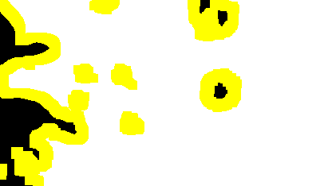

Colorized Reference Mask |

Original System Output Mask |

Binarized Reference Mask (Black = Manipulated, Yellow = Boundary No-Score Zone, Pink = Selective No-Score Zone, Purple = System Opt Out) |

Binarized System Output Mask (Black = Manipulated, Threshold <= 0) |

No-Score Zone (Yellow = Boundary No-Score Zone, Pink = Selective No-Score Zone, Purple = System Opt Out) |

Evaluation Result Visualization |
| Localization Metrics |
Optimum |
| Nimble Mask Metric (NMM) |
0.267 |
| Matthews Correlation Coefficient (MCC) |
0.728 |
| Binary Weighted L1 Loss (BWL1) |
0.051 |
| Grayscale Weighted L1 Loss (GWL1) | 0.051 |
|---|
| Area Under (ROC) Curve (AUC) | 0.931 |
|---|
| Equal Error Rate | 0.069 |
|---|
|
Total Pixels (N): 80921
| Confuson Measures |
OptimumPixelCount |
OptimumProportion |
| True Postives (TP: green) |
5797 |
0.072 |
| False Postives (FP: red) |
3508 |
0.043 |
| True Negatives (TN: white) |
71031 |
0.878 |
| False Negatives (FN: blue) |
585 |
0.007 |
|
No-Score Measures
|
Pixels
|
Proportion
|
|
Boundary No-Score Zone (BNS: yellow):
|
16423
|
0.169
|
|
Selective No-Score Zone (SNS: pink):
|
0
|
0.000
|
|
System Opt Out No-Score Zone (PNS: purple):
|
0
|
0.000
|
|
Total No-Score Zone:
|
16423
|
0.169
|
|